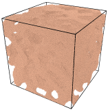
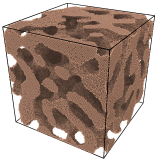

| Table of Contents | Ambient occlusion | Up |
|---|---|---|
| Prev | Modifiers | Next |
| Table of Contents | Ambient occlusion | Up |
|---|---|---|
| Prev | Modifiers | Next |
| Input: | Output: |
|

|

|
This modifier performs a fast lighting calculation to shade particles based on their occlusion by other particles. Ambient occlusion shading can provide an improved visual perception of complex three-dimensional structures. The example pictures on the right show the positive effect of the particle shading (left: uniform particle brightness; right: AO modulated brightness). The algorithm approximately calculates the shading produced by a spherical light source enclosing the entire structure (similar to an overcast sky). OVITO uses the graphics card to quickly perform this illumination calculation.
Note that the ambient occlusion modifier is only needed if you are using the fast OpenGL renderer or want quick shading of structures displayed in the interactive viewports. Other rendering backends, for example the Tachyon renderer support ambient occlusion shading as part of the image rendering process, which typically gives better visual quality than this modifier can.
The modifier should always be placed at the very end of a data pipeline to obtain correct lighting results.
The modifier manipulates the existing RGB values stored in the Color particle property by modulating
them with the computed per-particle brightness factors.
If the Color property is not present yet, it is created by the modifier and initialized with the
default particle colors.
Percentage value controlling the magnitude of the shading effect. The higher the shading intensity, the darker occluded particles will appear.
The uniform lighting produced by an overcast sky is approximated by a finite number of parallel light sources, which are placed evenly around the particle structure. This parameter controls the number of light sources to compute the ambient occlusion shading. A small number of exposure samples reduces computation time, but can lead to cast shadow artifacts.
To compute the illumination produced by a single directed light source, the modifier renders the particles as seen from that light source. All visible particles will receive a certain amount of light while occluded particles do not. This parameter controls the resolution of the internal rendering buffer. For systems with a large number of particles it might be necessary to increase this value such that every particle occupies at least one pixel in the rendering buffer.
OVITO implements the following simple ambient occlusion algorithm to determine an illumination factor for each particle, which is used to modulate the particle color. The illumination of a sky sphere enclosing the input structure is approximated by a large number of parallel light sources directed at the structure. The amount of light received by a particle from one such light surface is determined by rendering a projected image of the structure from the point of view of the light source to an offscreen frame buffer. All particles appearing in that image, which are not occluded by other particles, receive an amount of light that is proportional to their exposed area (i.e. the number of pixels they cover in the image). Finally, the light contributions from all light sources are added up to compute the per-particle illumination factors.